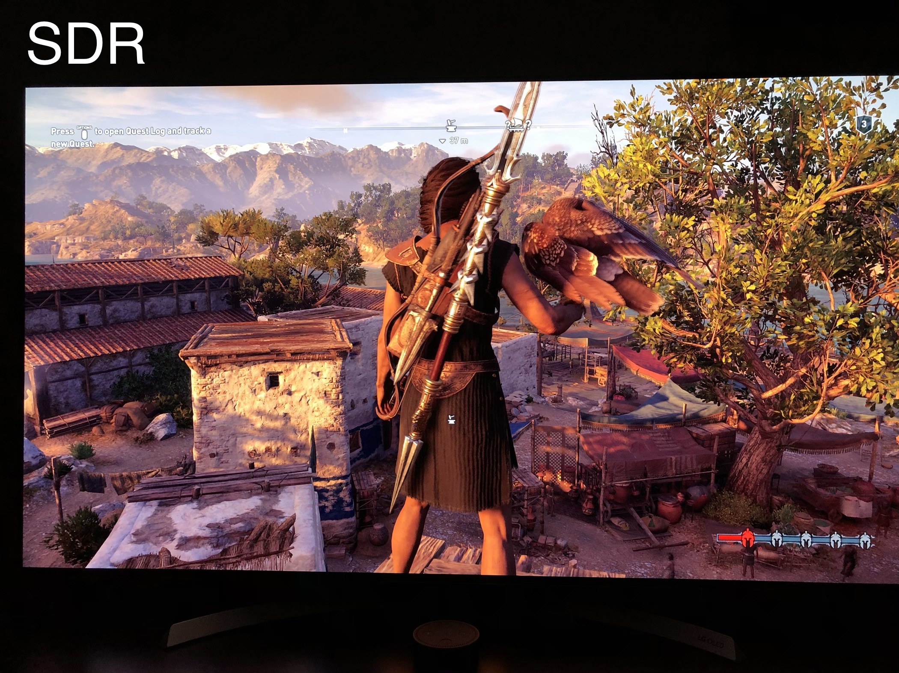

奥德赛和2k HDR 显示器
- Game 电子产品
✨✨✨You can Edit this Article on Github site最近沉迷刺客信条-奥德赛

why Odyssey
奥德赛这个名字，它是古希腊最重要的两部长篇史诗之一。承接《特洛伊》的剧情。
讲述了奥德修斯归乡 10 年间惊心动魄的传奇旅程。设定在 2400 多年前的伯罗奔尼撒战争时期——雅典和斯巴达为争夺希腊世界的主导权打了 10 多年的仗。
虽然育碧的游戏是典型的套公式类游戏，核心受众明显是轻度历史爱好者+喜欢刷任务的强迫症爱好者。比较明显的是 幽灵行动：荒野，大型玻利维亚观光游戏，虽然任务重复但是质量很高。
但是我还是强烈推荐奥德赛：
- 美术 这次的美术是真棒，古希腊、斯巴达还原度很好，尤其是 亚特兰蒂斯
- BGM 推荐原声带
- 育碧模式
本来是 cpy 版本的，后来第一个大型 DLC 亚特兰蒂斯 促使我入正了，官方是这样推荐的：
探索源自希腊神话的三个新世界——极乐世界，冥界以及亚特兰提斯！
朋友赞助 40 大洋，然后淘宝 5 大洋买了个育碧八折券，最后 326 大洋买了黄金版的奥德赛（带有一年季票，一年内的 DLC 可以任意畅玩）
更换显示器
我之前的显示器是很便宜的 AOC 12490PXH5 1080p 的显示器，只要 998 就买得到了，之前一直感觉大颗粒比较明显，前天剁手买了一个 DELL U2518DR 2k HDR 显示器，花了 1999 大洋，简直是最大的提升了。
没有选择 144HZ 第一个是我不常玩 FPS 游戏，显卡 1070TI 也带不动，4K 更不用说了
而且 1080P 到 2k 的提升比较明显，还有 HDR 10 ，所以选择了这款稍微便宜的显示器
这款显示器令人欣喜的是考虑到主机位置偏远，背置的 USB3.0 插拔不便，Dell U2518DR 在左侧还预留了两个 USB3.0
显示器可以上下、左右、旋转。
HDR
HDR 技术最大的特点就是拥有很高的亮度动态范围。
一般来说，人眼所能观察的亮度范围是 10^5 cd/㎡，若显示设备的峰值亮度越接近这一标准，效果也会越明显。HDR 也定义了显示设备所需的“亮度能力”——至少要有 1000nit 的峰值能力，才能真正显示 HDR 的内容细节。
HDR 是显示器硬件实现的，目前，常见有六个不同的 HDR 标准：hdr10，Dolby Vision，hdr10 +，HLG，Advanced HDR by Technicolor, DisplayHDR 。我买的这款显示器是基础的 HDR 10。
首先注意需要 HDMI 2.0 或者 DP 1.4 以上的线，其次操作系统为最新，而且主动打开显示器上的 HDR 功能，就可以在 windows 屏幕设置里面打开
在摄像里，HDR 要先后拍摄三种曝光版本的多张照片，再将这些照片合为一张输出。利用每个曝光时间相对应最佳细节的 LDR 图像来合成最终 HDR 图像，能够更好的反映出真实环境中的视觉效果。
HDR 的好处
HDR 技术能够有效地展现不同曝光下的画面细节，令画面更真实。
打开后整体屏幕发白，在游戏当中是正常
比如阳光从窗户透过的时候，HDR 效果下颜色将更丰富、更逼真，画面会有更微妙的层次和色调的转变。素材较好地保存了对比度细节，所以通常会产生非常锐利的图像
尤其是奥德赛里面的月光、沿海、日出特别明显，简直是两个游戏了。下面是一个玩家拍摄的 奥德赛 里面的区别:


可以明显的看到 HDR 看起来更加真实
支持 HDR 的游戏列表可以在这里查到List of games that support high dynamic range display (HDR)